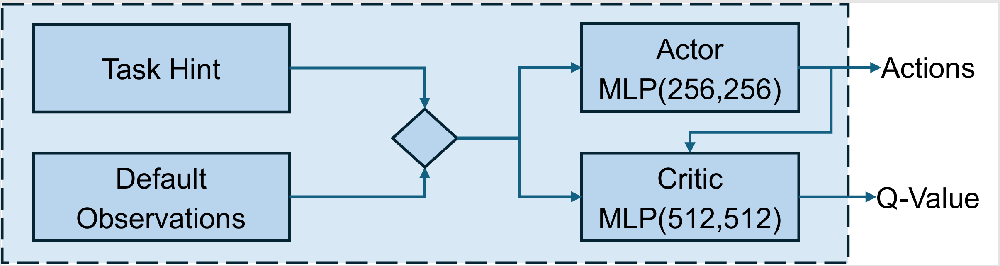
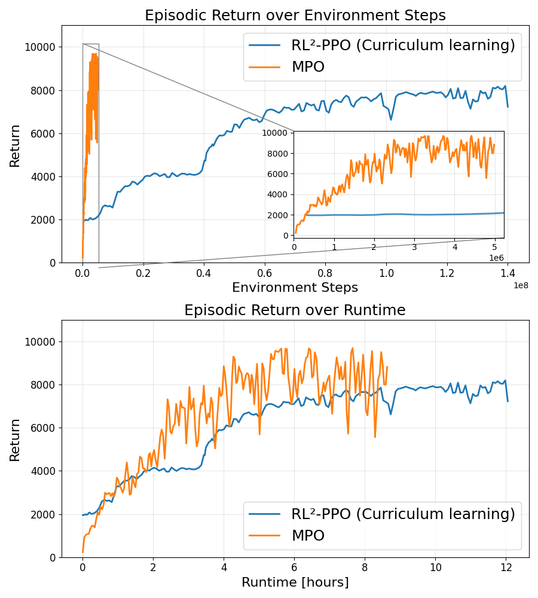
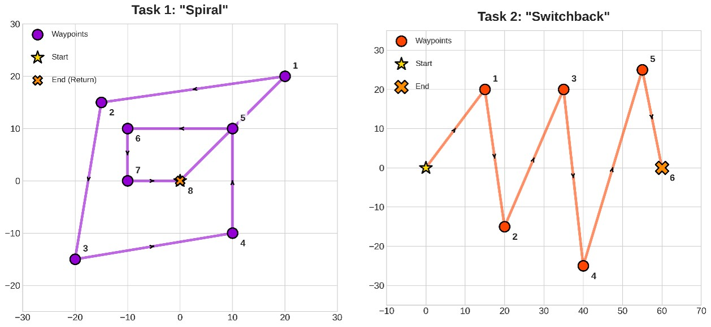
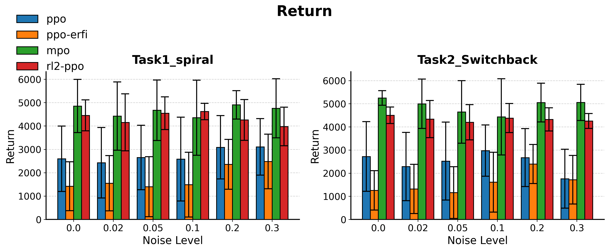
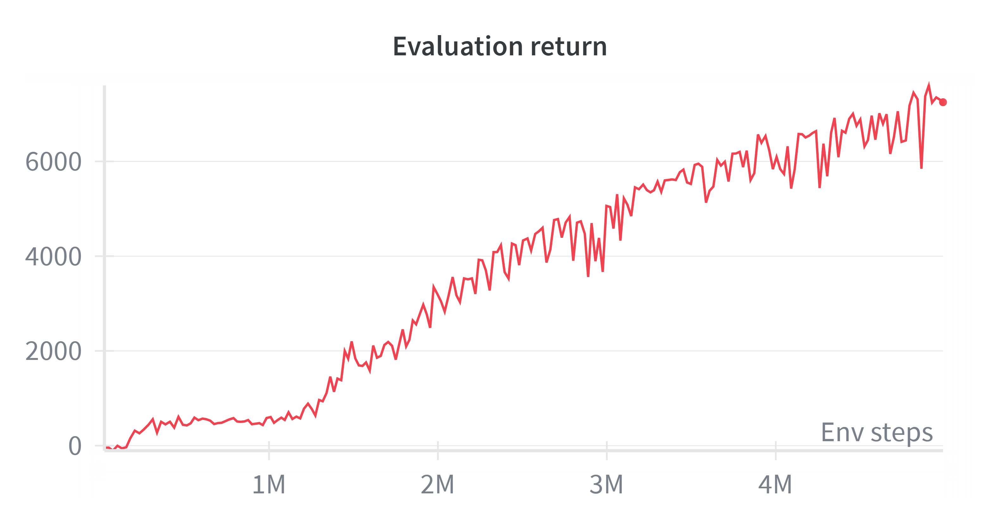
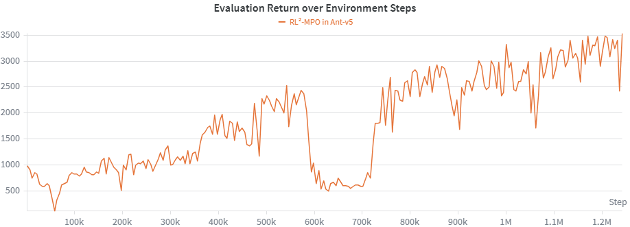

MPO Results: Meta-RL and Robust Multi-Task Experiments
This post presents the experimental results of my MPO implementation in continuous-control, meta-reinforcement learning, and robust multi-task settings. The main focus is on MPO, while PPO and RL²-PPO are included as benchmarking baselines, since comparing these approaches was one of the original goals of our university project.
Overview
This project was carried out as part of a course at TUM and focused on improving robustness for legged locomotion in simulation. The central idea was to study whether meta-reinforcement learning can facilitate sim-to-real transfer by making policies adapt more effectively to changing goals and disturbances.
In our team setup, I worked on MPO and RL²-MPO, while my teammate implemented PPO and RL²-PPO. RL²-PPO is an on-policy meta-reinforcement learning algorithm which has an recurrent actor and critic. The final comparison therefore combines an off-policy, meta-RL on-policy baseline [1] and PPO as non-recurrent and popular on-policy algorithm [2]. Since RL²-MPO turned out to be too expensive and unstable to train reliably within the project scope, this results page focuses on MPO and compares it mainly against PPO and RL²-PPO in meta-RL and robust multi-task experiments.
Actor & Critic Networks
Both actor and critic are implemented with an MLP architecture. As input, the actor receives the observation of the environment and a concatenated task hint, which depends on the experiment and will be mentioned later in this post. The output of the actor is the mean and variance of the Gaussian distribution from which the actions are sampled. The critic also receives the observations, the task hint, and the sampled actions as input and outputs the Q-value.

→ View actor and critic implementation on GitHub
Robust Multi-Task Setting
In the robust multi-task experiments, the ant was trained to move towards different target goals that were randomly sampled during training.
To support this, we provided an explicit task hint as part of the observation. This task hint consisted of the normalized distance to the goal as well as the relative angle between the ant's heading and the goal direction, encoded through \( \sin(\alpha) \) and \( \cos(\alpha) \).
To make the agent solve directed goal-reaching tasks, we modified the default reward function of the ant environment. In addition to the healthy reward, control cost, and contact cost, we introduced a targeted velocity term, a sparse goal bonus, and a death penalty.
- Reached-goal reward: \( R_{\mathrm{goal}} = 10 \)
- Death penalty: \( C_{\mathrm{death}} = 50 \)
In addition, we injected external random forces into the joints of the ant through ERFI. This makes the task more challenging and acts as a simple but effective robustness mechanism. Compared to full domain randomization, ERFI is easy to implement and requires much less manual design, while still testing whether a policy can remain stable under perturbations. For more information about ERFI, please see Campanaro et al..
For the RL²-PPO experiments, curriculum learning was required to obtain stable training in this more difficult setting. For MPO, in contrast, I used essentially the same hyperparameter setup as in the single-task experiments and did not tune specifically for the robust multi-task scenario.
Sample Efficiency and Stability

Bottom: Episodic return over runtime
The biggest difference between MPO and RL²-PPO appears in sample efficiency. MPO improves much faster with respect to environment interactions and reaches high returns substantially earlier during training. In our experiments, MPO crossed an evaluation return above 7000 after roughly 2 million environment steps, which highlights the strong data efficiency of the off-policy update.
At the same time, MPO showed noticeably higher variance in the evaluation returns. RL²-PPO learned more slowly, but its learning curve was typically smoother and more stable across training.
It should also be noted that the MPO configuration in this benchmark was not tuned specifically for the robust multi-task setting. I did not use curriculum learning, and the hyperparameters were completely transferred from single-task training without ERFI noise. Even under these conditions, MPO still achieved very strong sample efficiency, which makes the result particularly encouraging.
Although MPO is clearly more sample efficient, this advantage does not directly translate into a lower wall-clock cost. In our setup, MPO remained computationally expensive and required roughly eight hours for around five million environment steps. This means that its strong sample efficiency comes at the price of a comparatively high runtime. For a simple MuJoCo environment such as Ant-v5, this reduces the practical benefit of MPO's sample efficiency.
Robust Multi-Task Performance
We finally evaluated the trained RL²-PPO, PPO, and MPO agents on two different maneuver tracks, which were designed to test their ability to reach new targets. These tracks were not seen during training. Additionally, we tested each agent under different ERFI noise levels, including levels outside the training distribution. The maximum noise level during training was 0.5 and during evaluation 0.3. We tested each agent for 20 runs across all noise levels and both tracks.

In these evaluations in Figure 4, MPO consistently achieved stronger final performance than RL²-PPO and PPO. This indicates that MPO can handle the robust multi-task setting very well, even though it does not explicitly use a recurrent policy for online adaptation.
However, the same pattern as in training remained visible during evaluation: MPO delivered better peak performance, but also exhibited higher variance. RL²-PPO was typically more stable and less noisy, although its final performance was lower. PPO and PPO-ERFI, the latter trained with ERFI noise, served mainly as baselines and were clearly outperformed by the more advanced approaches.

Meta-Reinforcement Learning Experiment
In order to examine the limits of MPO with an MLP actor in a meta-RL setting, we tested our agent on a task with only two possible directions. As a task hint, the agent received only the actions and rewards from the previous steps, without an explicit task hint as in the multi-task setting.
The results can be seen in Figure 5:

As we can see, MPO with an MLP architecture was able to reliably learn to infer the task direction from previous rewards and actions alone. However, this remains limited to small task distributions. An experiment with a similar random target-goal setting as in the multi-task setting showed the limits of the MLP architecture.
RL²-MPO
Last but not least, I want to mention our experiments with the RL²-MPO variant. As already mentioned, it was difficult to get it running reliably due to the high runtime and some policy collapses. The high runtime in RL²-MPO is mainly caused by the required BPTT (Backpropagation Through Time), which is performed very often in our off-policy algorithm. However, the concept still seems promising. If I had more time and computational resources, I would like to continue working on this, but due to my limited resources I will focus on algorithms that do not require as much computational effort.

This plot shows the learning curve over 5 million environment steps and a runtime of about 8 hours. As you can see, the agent improves significantly and is much more sample-efficient compared to the RL²-PPO baseline. However, the long runtime was a major issue.
References
- Y. Duan, J. Schulman, X. Chen, P. L. Bartlett, I. Sutskever, and P. Abbeel, “RL²: Fast Reinforcement Learning via Slow Reinforcement Learning,” 2016. [Online]. Available: https://arxiv.org/abs/1611.02779
- J. Schulman, F. Wolski, P. Dhariwal, A. Radford, and O. Klimov, “Proximal Policy Optimization Algorithms,” 2017. [Online]. Available: https://arxiv.org/abs/1707.06347
- A. Abdolmaleki, J. T. Springenberg, Y. Tassa, R. Munos, N. Heess, and M. Riedmiller, “Maximum a Posteriori Policy Optimisation.” [Online]. Available: http://arxiv.org/abs/1806.06920
- L. Campanaro, S. Gangapurwala, W. Merkt, and I. Havoutis, “Learning and Deploying Robust Locomotion Policies with Minimal Dynamics Randomization,” vol. 242, pp. 578–590.
→ Read MPO Algorithm: Theory and Implementation Details